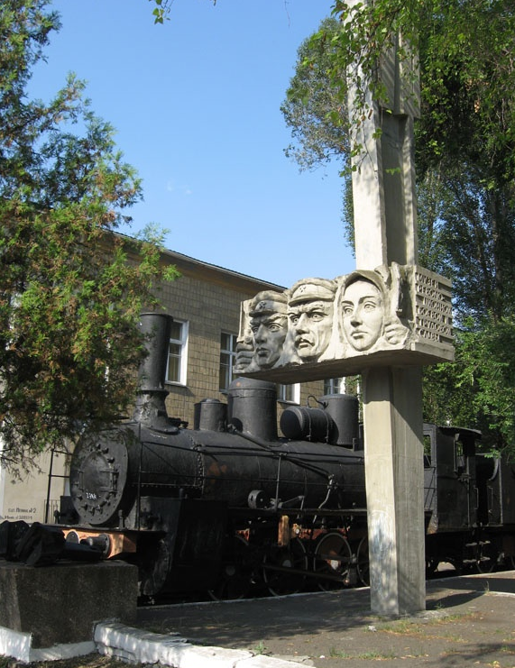
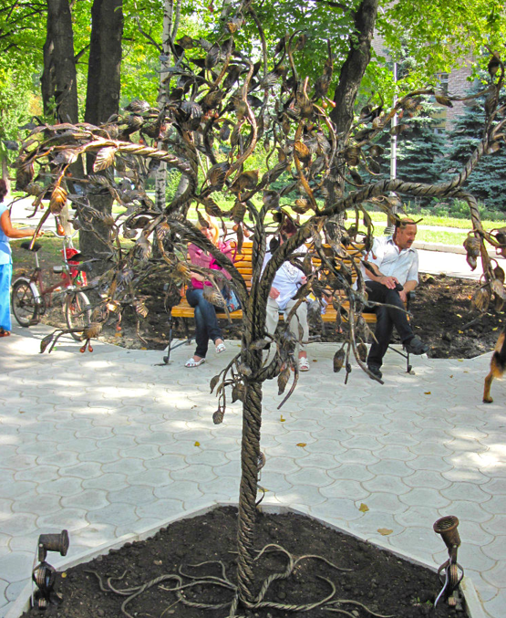

 Паровоз-музей - Живой памятник прошлым рабочим будням железнодорожников-ясиноватцев – паровоз серии «Ов» («овечка») 1909 г. и пассажирские вагоны 1912-37 г.г.
Музей революционной, боевой и трудовой славы в городе Ясиноватая был открыт в 1972 году в честь 100-летия города. Рядом с клубом железнодорожников на постамент встали три пассажирских вагона во главе со старым паровозом серии «Ов» 1909 года изготовления. В первом вагоне была развернута экспозиция, рассказывающая об участии железнодорожников Ясиноватой в первой русской революции, в борьбе за власть Советов. Во втором вагоне — о развитии станции после победы Октября, о подвигах ясиноватцев в годы Великой Отечественной войны и послевоенный период. Последний вагон был заполнен материалами съездов КПСС.
В тяжелые годы становления независимости Украины финансирование музея прекратилось и он был закрыт.
В настоящее время один из вагонов демонтирован, а оставшиеся два – 1912 и 1937 годов выпуска, вместе с паровозом «Ов» стали частью ясиноватского филиала музея истории и развития Донецкой железной дороги, который был открыт в Доме науки и техники локомотивного депо Ясиноватая (бывший клуб железнодорожников) 28 июня 2008 года. На стеле, установленной рядом, – три горельефа (авторы – архитектор В.Д. Акиндеев и скульптор В.Г. Колеснюк).
В восьмидесятых годах в Ясиноватой, в честь работников «ЯМЗ», на пересечении улиц Хмельницкого и Ленинградской, был установлен памятник – проходческий комбайн на каменном постаменте. Использованный для памятника проходческий комбайн является моделью ПК- 9р, которую на заводе выпускали с конца семидесятых годов прошлого века.В постамент вмонтирована табличка: Создателям горнопроходческой техники посвящается.
Данный комбайн получил большую признательность у горняков за свою надежность, простоту конструкции и производительность.
С 22 октября 1941 года по 7 сентября 1943 года г. Ясиноватая Донецкой области был в окупации. В это время 1187 ясиноватцев храбро сражались на фронтах, 387 из них погибли за Родину. Орденами и медалями награждено около 800 человек, двум — Е. М. Березовскому и М. А. Ралдугину — присвоено звание Героя Советского Союза.
В ночь на 7 сентября 1943 года части 34-й гвардейской и 216-й стрелковой дивизий завязали бои на подступах к Ясиноватой и к рассвету штурмом овладели станцией.
В память об этих событиях Великой Отечественной войны в центре города Ясиноватая, на улице Оржоникидзе, установлен Мемориал. Это памятник погибшим в боях ясиноватцам и освободителям города. Мемориал состоит из: скульптуры солдата, который держит склоненное знамя над плитой с фамилиями бойцов, погибших при освобождении города; стены с фамилиями погибших жителей Ясиноватой; танка ИС-3 на постаменте – в честь воинов 34-й гвардейской Енакиевской дивизии, освобождавшей Ясиноватую; стелы с орденом Отечественной войны на верхушке.
 140-летие города Ясиноватая проходило в этом году по обычному, заранее намеченному и довольно стандартному плану. Перечень мероприятий особо не отличался от предыдущих дней рождений. Однако кое-что примечательное и весьма приятное всё-таки произошло.
Ознаменовался праздник тем, что ООО «Форт ЛТД» в лице руководителей предприятия: Никулочкина И.Ф., Серика Ю.Н, Малыша В.В и Бершадского О.В. подарило всем жителям к празднику прекрасное творение кузнечного ремесла. Шедевр мастерства, над эксклюзивной работой которого трудились кузнецы предприятия целых 15 суток, не покладая рук, теперь украшает центральный бульвар Ясиноватой. Талантливые мастера, профессионалы своего дела и истинные ценители красоты вложили в произведение искусства не только многолетний опыт в области художественной ковки, но и теплоту собственной души, любовь к родному городу и неподдельное желание украсить серые и невзрачные улицы. Работа кипела и днём, и ночью. Желание успеть закончить начатое ко дню города заставляло специалистов кропотливо трудиться в две смены.
Полная свобода — это самый большой подарок, который ты можешь предложить кому-либо. Свобода любить, смеяться, плакать, чувствовать испуг, злость, неуверенность, сомнения или радость. Чтобы хранить их в этом надежном и священном пространстве. Ты не сможешь заставить кого-либо быть счастливым. Но ты можешь присутствовать. Присутствовать рядом с их несчастьем и волнением. Присутствовать рядом с жизнью, которая движется в них. И ты можешь пригласить их к более глубокому Счастью. Счастью, которым является само Бытие. Счастью, которое поддерживает их точно такими, какие они есть. Ты можешь пригласить их к Счастью, с которым ты поддерживаешь их сейчас. Подобно тому Счастью, с которым земля поддерживает цветы, деревья, большие горные массивы. Тому, которое поддерживало тебя с самого начала. Прежде, чем родились звезды.
Ясиноватский поет Ягужин А.С.